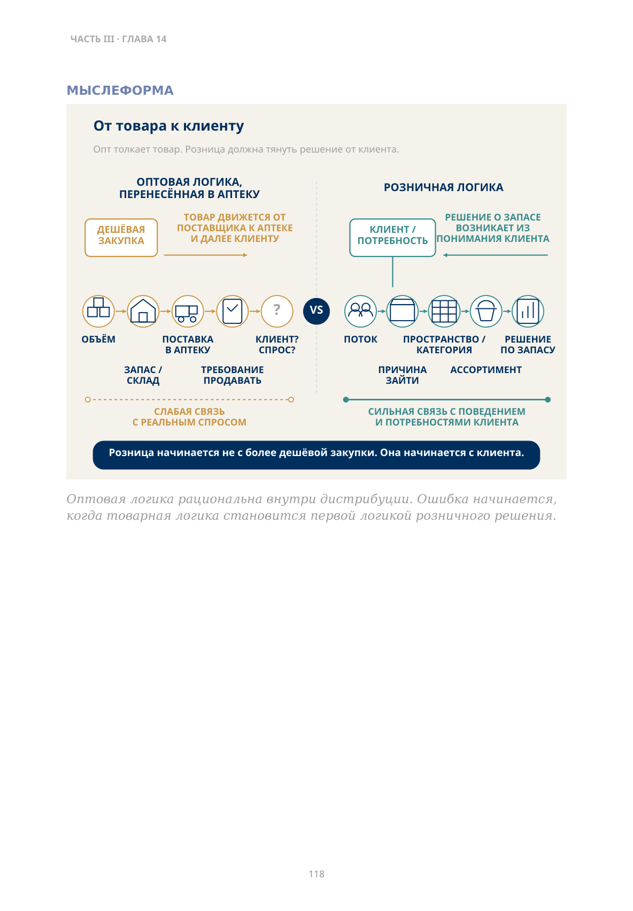
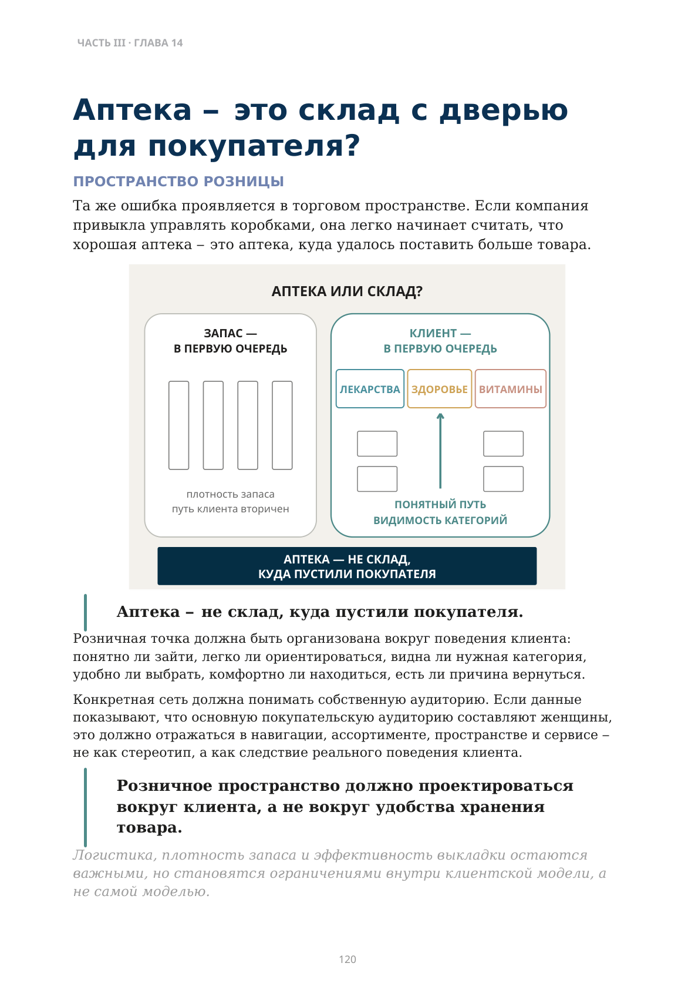

Когда клиенты становятся конкурентами?
Переход дистрибьютора в розницу и смена мышления
Дистрибьютор исторически создаёт реальную ценность.
Он агрегирует закупки у производителей, дробит крупные партии, держит широкий ассортимент, предоставляет товарный кредит, управляет складом и доставляет товар множеству аптек.
Но что происходит, когда крупнейшие клиенты начинают строить часть этой инфраструктуры внутри себя?
Аптечная сеть создаёт собственный склад. Ускоряет пополнение. Агрегирует спрос. Начинает покупать напрямую. Создаёт собственную систему данных, категорийного управления и логистики.
Клиент остаётся клиентом дистрибьютора. Но одновременно начинает конкурировать с ним за функцию.
Когда клиент учится выполнять часть вашей работы, он становится конкурентом за экономику этой функции.
Важно увидеть, что конкуренция начинается ещё до прямого столкновения на розничном рынке. Сеть может продолжать покупать у дистрибьютора, но одновременно забирать себе складскую функцию, закупочные переговоры, данные или часть логистики. Объём отношений сохраняется, а роль дистрибьютора уже сужается.
Поэтому вопрос для собственника звучит не только «теряем ли мы клиента?», но и «какие наши функции клиент уже научился выполнять без нас?»
Если сеть забирает функции вверх по цепочке, не должен ли дистрибьютор сам пойти вниз — в розницу?
Может быть, должен. Но покупка аптек ещё не означает, что компания стала розничной.
Можно ли купить аптечную сеть и продолжить мыслить как дистрибьютор?
В оптовом бизнесе естественная логика выглядит так:
- где купить дешевле;
- какой объём даст лучшую цену;
- как быстрее распределить товар;
- как загрузить склад и маршруты;
- как продать уже купленный объём.
В дистрибуции эта логика рациональна.
В рознице она становится опасной, если остаётся первой логикой принятия решения.
Розница должна начинать с других вопросов:
Почему клиент должен прийти именно сюда? Какую потребность он хочет закрыть?
Что он должен найти в аптеке? Как движется клиентский поток?
Почему человек должен вернуться?
Дистрибьютор прежде всего оптимизирует движение товара между участниками рынка. Розница соединяет клиента, его потребность и точку продажи.
Розница начинается не с более дешёвой закупки. Она начинается с клиента.
Кто на самом деле принимает решение?
Старая система управления никуда не исчезает
Сложность в том, что после приобретения аптек старая система управления никуда не исчезает. Те же закупщики видят скидку. Те же склады видят объём. Те же финансовые показатели поощряют оборот. И если розница не получает собственного права принимать решения, оптовая логика начинает незаметно управлять торговой точкой.
Смена мышления должна быть не декларацией, а изменением управленческого процесса.
Нужно определить: кто формирует ассортимент, кто имеет право отказаться от объёма, кто отвечает за поток клиента и кто несёт ответственность за результат конкретной аптеки.
Именно здесь покупка аптек превращается либо в настоящий розничный бизнес, либо просто в ещё один канал для уже привычной оптовой логики.
Вопрос собственнику
Кто в спорной ситуации имеет последнее слово: закупка, потому что цена хорошая, или розница, потому что объём ей не нужен?
Если ответа нет, организационная структура формально изменилась, а объект управления — нет.
Оптовая логика рациональна внутри дистрибуции. Ошибка начинается, когда товарная логика становится первой логикой розничного решения.

Описание схемы
FIG_057: От товара к клиенту
Сравниваются две логики. Оптовая идёт от товара и поставки к аптеке, её связь с реальным спросом слабее; розничная начинается с клиента и потребности, проходит через пространство/категорию и заканчивается решением по запасу. Розница начинается с клиента, а не с денежной закупки.
Купили дешевле. Теперь кто-то должен это продать?
Представим товар, который в конкретной аптеке продаётся примерно один раз в год.
Появляется возможность купить его очень дёшево. Оптовая логика подсказывает:
Цена хорошая. Надо взять больше.
И в аптеку приезжает двадцать упаковок. После этого продавцу говорят: «Теперь продавайте».
≈ 1 продажа в год → 20 упаковок в аптеке
Но спрос не изменился. Клиентов не стало больше. Потребность не выросла. Товар просто переместился со склада в аптеку.
Нельзя сначала купить товар, а потом приказать рознице создать под него клиента.
Скидка может увеличить запас. Она не создаёт спрос автоматически.
Если товар нужен редко, двадцать дешёвых упаковок могут оказаться не выгодной закупкой, а замороженным капиталом.
Скидка создала спрос — или только запас?
Аптека — это склад с дверью для покупателя?
Та же ошибка проявляется в торговом пространстве. Если компания привыкла управлять коробками, она легко начинает считать, что хорошая аптека — это аптека, куда удалось поставить больше товара.
Аптека — не склад, куда пустили покупателя.
Розничная точка должна быть организована вокруг поведения клиента: понятно ли зайти, легко ли ориентироваться, видна ли нужная категория, удобно ли выбрать, комфортно ли находиться, есть ли причина вернуться.
Конкретная сеть должна понимать собственную аудиторию. Если данные показывают, что основную покупательскую аудиторию составляют женщины, это должно отражаться в навигации, ассортименте, пространстве и сервисе — не как стереотип, а как следствие реального поведения клиента.
Розничное пространство должно проектироваться вокруг клиента, а не вокруг удобства хранения товара.
Логистика, плотность запаса и эффективность выкладки остаются важными, но становятся ограничениями внутри клиентской модели, а не самой моделью.

Описание схемы
FIG_058: Аптека — это склад с дверью
«Аптека или склад?» Слева запас является первой очередью: товар хранится, затем для него ищут клиента. Справа клиент является первой очередью: потребность ведёт к категории и понятному пути внутри аптеки.
Что должен изменить собственник?
Розничная точка должна одновременно удерживать две дисциплины: товар должен быть доступен, а клиенту должно быть понятно и удобно покупать. Если одна из них подавляет другую, собственник получает либо красивую, но операционно слабую аптеку, либо эффективный склад с кассой.
Если дистрибьютор решил строить собственную розницу, недостаточно сменить структуру собственности. Нужно разделить две управленческие логики.
| ДИСТРИБУЦИЯ ОПТИМИЗИРУЕТ | РОЗНИЦА ОПТИМИЗИРУЕТ |
|---|---|
| закупочную цену | клиентский поток |
| объём | уровень наличия |
| склад | ассортимент |
| логистику | пространство и сервис |
| кредит | повторный визит |
| обслуживание множества клиентов | экономику конкретной точки |
Дистрибуция может предоставлять рознице инфраструктуру. Но она не должна принимать за розницу ключевые решения.
Даже показатели у них разные. Для дистрибуции сильным результатом может быть лучшая закупочная цена, загрузка маршрута или высокая оборачиваемость склада. Для розницы этого недостаточно: товар должен быть в наличии именно там, где есть спрос; ассортимент должен соответствовать потребности; точка должна удерживать клиента.
Если одна и та же управленческая система оценивает оба бизнеса только через закупочную экономию и объём, конфликт почти неизбежен.
Сильный дистрибьютор может дать рознице инфраструктуру. Розничную компетенцию всё равно придётся построить отдельно.
Что проверить перед тем, как считать переход в розницу завершённым?
- Решение по аптеке начинается с закупочной возможности или с клиентской потребности?
- Покупаем ли мы объём потому, что он нужен рознице, или потому, что поставщик дал хорошую цену?
- Кто отвечает за клиентский поток и причины выбора нашей точки?
- Кто проектирует ассортимент и пространство — розница или закупка?
- Есть ли у розничного бизнеса право сказать дистрибуции: «Этот объём
нам не нужен»?
- Мы действительно строим розничный бизнес — или просто создаём собственный канал для оптового товара?